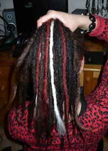
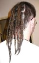

Je libo...
- Rasta copánky
- Francouzské copánky
- Úpravy dreadů
-
Volné termíny
- Henna
- Karetky
-
- Fotogalerie
- Ceník
- Kontakt
- Vzkazy
- Odkazy
Evanii - rasta copánky v Brně
Dready
Z důvodu nedostatku času v současnosti nepřijímám objednávky na celé hlavy nových dreadů!
Pletením dreadů se zabývám spíše příležitostně. Celé hlavy pletu výjimečně, ale nedělá mi problém v případě zájmu vytvořit několik dreadů (například HC), případně doprodloužit vám vlastní dready kanekalonem nebo pravými vlasy. Dále také provádím veškeré úpravy dreadů a jejich rekonstrukce. Dready při opravách neprovlékám odrosty.
Dready, ač se to nezdá, vyžadují poměrně zodpovědnou péči. Čas dělá dready kvalitnějšími, ale hlavně zpočátku je nutné je co nejčastěji háčkovat a zatahovat vlasy, které se z dreadu uvolňují. Dready by se také měly, alespoň první měsíc, minimálně namáčet (pokud možno vůbec). Uvolněné vlasy z dreadu nikdy nestříháme, protože každý vlas může být zaháčkován zpět.
Dready jsou na výrobu poměrně zdlouhavé a je třeba říci, že taky docela bolestivé. Na to je potřeba se předem připravit.
Pseudodready
Pseudodready se vyrábí obvykle z kanekalonu, česané ovčí vlny nebo mohou být na hlavu přímo napleteny z chemlonu. Vlastní výrobou pseudodreadů se nezabývám (pouze příležitostně tvořím vlněné pseudodready), ale nedělá mi problém Vám v případě zájmu zaplést do vlasů vlastní pseuda, která si přinesete.
Ukázky mých prací
 


oprava dreadů

Více v galerii.

{kind=link}
{kind=link}